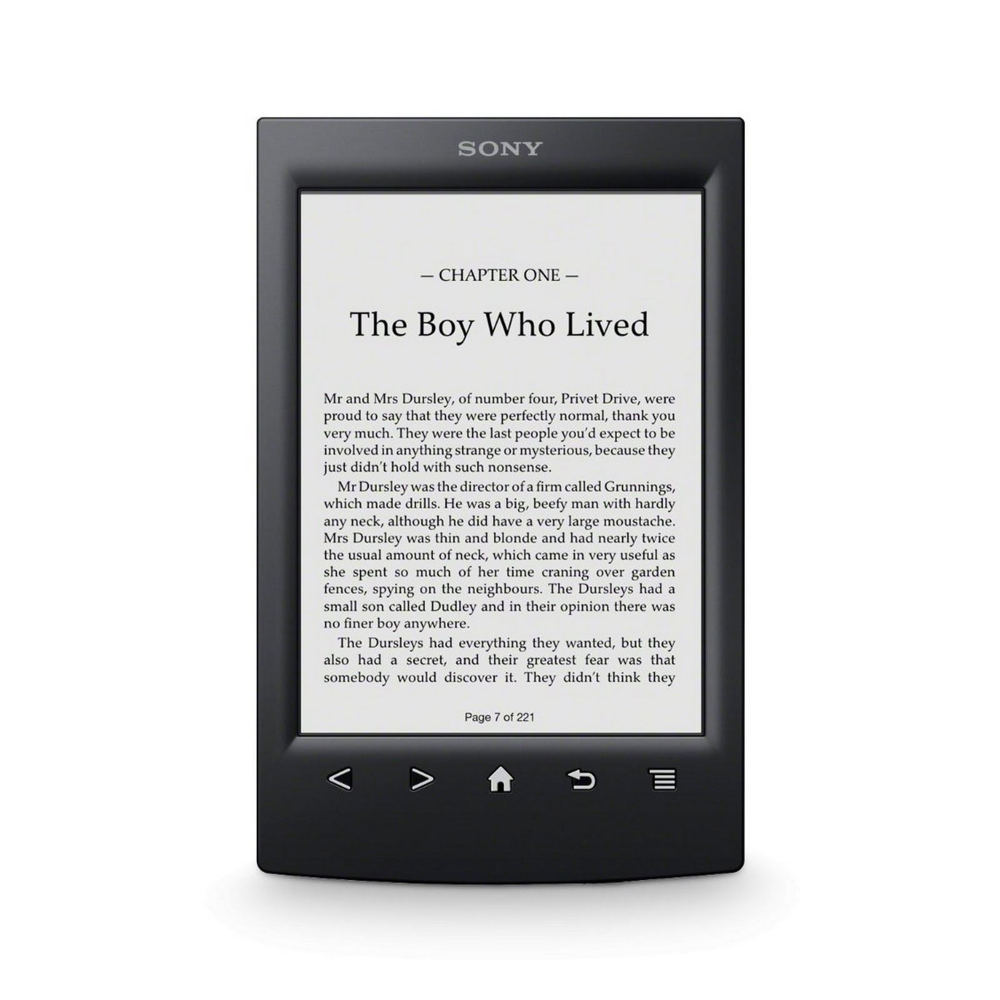

En general es pot dir que un eBook o un llibre digital és un material de lectura digital que es pot visualitzar en qualsevol ordinador, o en un dispositiu portàtil específic per aquest ús.
El llibre digital o eBook ca començar vía un porojecte anomentat "Proyecto Gutenberg" de Michael Hart el 1971, una llibreria digital per a llibres de domini públic i com a objectiu tenia posar a disposició del món la major quantitat d'obres literàries possibles. Com a curiositat dir que aquest projecte va començar abans que Internet fos públic.
Funcionament
Un eBook bàsicament és un aparell on poder, normalment, llegir llibres en format ePub encara que també llegeir PDF i altres.
Un eBook té una pantalla de entre 6 i 10 polzades i aquesta és capaç de mostrar contingut només en blanc i negre, normalment venen amb 3G i WiFi per a poder descarregar llibres, encara que casi bé sempre es passen amb un USB, una MicroSD o en algunes a través d'un almacenatge al núvol.
Els llibres digitals et venen amb uns controls físics bàsics, a la part inferior de la part delantera, que et permeten moure per el menú on tens tots els llibres guardats i passar les pàgines. Els ultims models d'alguns eBook,com el Kindle Fire d'Amazon, ja et venen amb pantalla tàctil i més funcions.

Funcions i Prestacions
Els llibres digitals ens aporten la facilitat de poder transportar molts llibres en poc espai, i pes. Ens permeten comprar o descarregar els llibres sense la necessitat de tenir que esperar a que el tinguin a la llibreria o si el demanes per Internet a que t'arribi a casa.